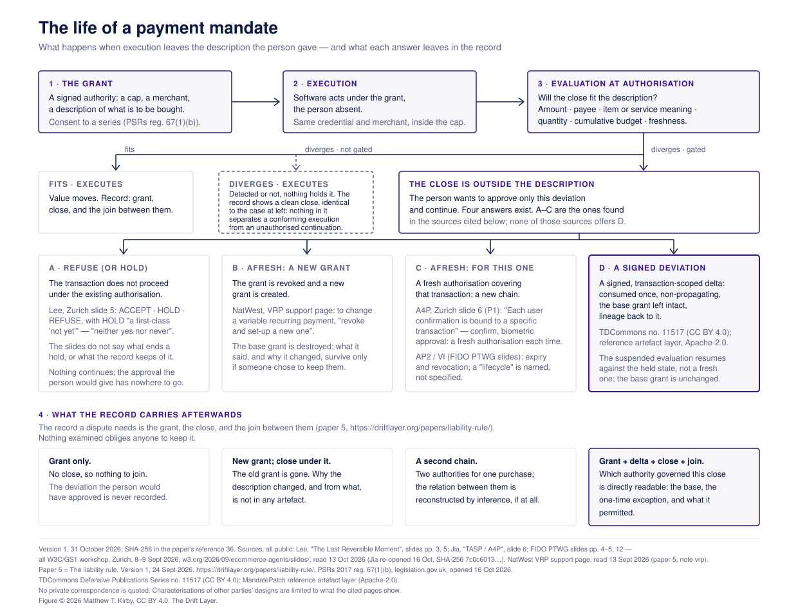

The Drift Layer
The Link Between Consent and the Change
What the field does when an agent's purchase departs from what was agreed, and the one artefact no examined system produces
| Author | Matthew T. Kirby, Independent Researcher, River Falls, Wisconsin, USA — matthew.kirby@driftlayer.org |
|---|---|
| Date | Version 1, 31 October 2026 |
| Version | 1 |
| Licence | CC BY 4.0 |
| Paper | The Drift Layer, paper no. 7 |
| Cite as | Kirby, M. T. (2026) The Link Between Consent and the Change: what the field does when an agent’s purchase departs from what was agreed, and the one artefact no examined system produces. The Drift Layer, paper no. 7, version 1. https://driftlayer.org/papers/consent-and-change/ |
The files
| Version 1 | consent-and-change-v1.pdf 261,597 bytes · 28 pages · A4 SHA-256 c3d6c8646e5e87e8a21714575f93121192243aa5c087af1236380aac9480794d |
|---|---|
| Figure 1 | consent-and-change-figure-v1.svg 12,080 bytes · SVG, version 1, 31 October 2026 SHA-256 f6494c3d58a24aa351f803511f89626bbbcee208af88a6372e52297bac909df0 |

Version 1 — 31 October 2026. These files are the fixed, citable copies. They are not overwritten when a later version is published.
Previous versions and errata (0)
No corrections yet. This paper's central claim is an absence, and an absence invites correction: any correction will be listed here with its date and the passage it touches, a corrected file will appear beside this one as Version 2, and the Version 1 files above will not change. See versions and errata.
Related
An obligation in one place, a definition in another, paper no. 6, 8 October 2026. A liability rule aimed at the wrong control, paper no. 5, 24 September 2026. The Drift Layer: the clean, fast session that is not proof of authority, paper no. 4, 14 September 2026. Four Measures for Mandate Conformance, version 2, 8 October 2026. Response to the RPIB consultation, 9 September 2026. The specification and its errata — Technical Disclosure Commons no. 11517, which §3 of this paper describes.
I am not a lawyer. What follows is a reading of network rules, regulator statements, protocol specifications and vendor documentation as published, quoted so the reading can be checked. The questions it raises are for people who are.
Disclosure. Drafting, source verification and editing were assisted by large language models working as separate desks that checked one another’s work against primary sources. Every quotation in this paper was matched against the document it is attributed to, every absence was searched for rather than assumed, and every judgement is the author’s.
Abstract
A standing payment authorisation is given once and executed many times. Between those moments what is being bought can change — a price moves, an item is substituted, a quantity is adjusted — and when an agent is transacting, nobody is at a screen when it does. This paper asks what the field does at that moment, and answers from the field’s own documents.
Every system examined does one of three things: lets the transaction through, refuses it, or has the person authorise afresh — a new standing authority, or a second authorisation for this one transaction. A regulator has named the first for what it is — a payment outside the scope of the mandate “would be unauthorised unless the customer agrees to amend the mandate or set up a new mandate” — and the two permitted routes it names beside it are both prospective. The rails change a live authorisation in two ways: a merchant-authored increment, amount-only and barred by rule from recurring transactions, and a network’s prospective update to a standing instruction. No tolerance found is a tolerance on the item.
The load-bearing claim is an absence, and it is an absence of the conjunction rather than of the parts. Across two card networks’ public rules, one network’s agentic kit as published, four procurement systems, the leading agent-payment protocol at one commit, two identity-credential systems, one vendor’s published approval pattern and the research literature at the level stated, no examined system produces an object signed by the principal, scoped to one transaction and the suspended execution that produced it, evaluated against the terms the mandate already carries, consumed once, not propagating, leaving the base intact and carrying lineage back to the version it departed from. Such an object is specified in a disclosure the author published in August 2026 under CC BY 4.0, which this paper describes and does not independently evaluate; no deployment is claimed, and the specification’s published limits travel with it here.
The regulator’s word for the first outcome is countable, so the paper closes on measurement: four published measures, coverage first. Throughout it says standing mandate and signed deviation, leaving amend to the regulator and the vendors, because the mechanism performs no operation on the mandate.
§1 — The case
You are at work. A standing instruction authorises your groceries each week — the same list, the same store, a ceiling you set because it is what you meant to spend. This week one line cannot be filled as written: the list says a twenty-four-pack of a soft drink, and the store has only twelve-packs.
The agent can give you the same amount of drink by buying two twelve-packs. Two twelves cost more than one twenty-four, so that puts the order over your ceiling. It can buy one twelve-pack and stay under the ceiling, but that is half of what you asked for. And there is no twenty-four-pack to buy.
So one substitution has broken two of the terms you set — what is being bought, and what it costs — and it broke the second by fixing the first.
Three things about that moment are worth stating before anything else. There is no session to interrupt: you are not at a screen, and a confirmation that depends on holding you on one cannot serve it. Nothing here is an emergency, and that is the difficulty rather than the relief — a mechanism that works only while someone is waiting is no use for the weekly shop. And the answer you would give, if asked, is yes to the two packs and the few dollars, this once. It is not raise my ceiling, and it is not change my list.
That is the case this paper is about: a standing authorisation given once and executed many times, where between the giving and the executing the thing to be bought changes. An item is out of stock and something else is substituted. A quantity is adjusted. A price moves — sometimes, as here, because the substitution moved it. Nothing in what follows depends on the figures.
What the systems do
Every system examined for this paper does one of three things when the transaction in front of it leaves the authority it was given.
It lets it through — the money goes out and nobody is asked. It refuses — the transaction declines, and the order fails. Or it has the person authorise afresh — either by tearing the standing authority down and building a new one in its place, or by adding a fresh authorisation for this one transaction beside the standing one. In either form the person approves again, and nothing links what they now approve to what they approved before.
Those three are not a taxonomy invented here. A regulator’s one sentence of published guidance, which §2 sets out, names the first of them for what it is — unauthorised — and names two permitted ways out. One is the first form of the third: set up a new mandate. The other, amending the standing one going forward, is an answer that changes the authority for next time as well as for this transaction, and §2 returns to it. The guidance does not reach the second, a refusal, because a declined transaction is not a payment. Each of the three is something some system actually does, and §6 returns to what the first is called. What none of them does is tie the change to what the person first agreed to — and when there is a dispute, that link is the whole case.
What tie means here, and what it does not
The claim is narrow and it is easy to overstate, so it is worth fixing at the outset.
To tie a change to what was first agreed means two things together: a pointer from the change back to the authority it departs from, and a signature by the person over the change itself. A lineage and a consent, in one artefact, which can be carried to somebody who was not present.
It does not mean that no system validates anything. Systems validate a great deal. A network service that has been told the instruction now carries a higher ceiling than the one the person approved will check each subsequent transaction against the instruction, and will do so correctly. The observation is not that the checking is absent. It is that what the system checks against is the updated authority, and nothing in the record points back at the terms the person approved before the change, or carries that person’s approval of the change as a thing a third party can verify later.
The rails already amend the money
It would be wrong to say that nothing in the payment rails amends a live authorisation. Something does, and the distinction matters enough to state twice.
Within a single transaction, the card networks have a mechanism for raising an authorised amount against the authorisation already approved, carried on the same identifier and matched as one at clearing. It is the field’s own amend-rather-than-replace, it works, and §2 reads it from both rulebooks. Three features of it decide this paper’s question. The merchant submits it, not the cardholder. It carries an amount and nothing else — no item, no substitution, no quantity. And the person’s consent to it was taken in advance, to an estimate, together with notice that further requests might follow; the particular change is never put to them.
Across a standing authorisation executed many times, the mechanism is barred outright: the rule that permits it excludes recurring transactions by name. The case this paper is about is the case the increment is excluded from.
So within the increment the money-side amendment exists and there is no intent-side counterpart to it. The increment moves the number; it has no field for the item was substituted, the quantity changed, what was bought stopped meaning what was asked for — and no place for the person to sign that it was acceptable. That is the seam this paper describes, stated in the rails’ own vocabulary rather than in its own.
What this paper does
§2 sets out how the field answers today, from primary instruments: a regulator’s three outcomes and the provenance of the words it uses; a tolerance band and where its number came from; the two mechanisms in the payment rails that genuinely amend, and why neither is this one; what the European and United Kingdom regimes require at the moment of change, and what they leave unrecorded.
§3 describes the mechanism this paper is about, drawn entirely from a specification already published under an open licence: a delta signed by the principal, scoped to one transaction, evaluated against the terms the mandate already carries, consumed on use, not propagating into the base, with the base left intact and a lineage pointer back to it.
§4 distinguishes it from the nearest things in the record — the payment rails, procurement systems, the leading agent-payment protocol, the identity-credential systems and the research literature — each opened, with what is said about it either quoted from it or characterised from a reading of it.
§5 states this paper’s own limits: what was not examined, what was examined behind a sign-in, and which absences are structural rather than the result of a search.
§6 closes on the measure: why a mechanism of this kind needs one, what the author’s published measures do, and what a measure of this kind cannot do.
A note on one word. Amendment in this paper means what the regulator, the vendors and the networks mean by it; the thing §3 describes is a signed deviation against a standing mandate, and §2 says why the word is left to them.
§2 — How the field answers today
A standing authorisation is given once and executed many times. Between those two moments the thing to be bought can change: the price moves, the item is out of stock and something else is substituted, the quantity is adjusted. The question this paper is about is what happens then, and the field already has answers. They are worth setting out precisely, because they are better documented than they are discussed, and because a regulator has named three dispositions of the case in one sentence.
A regulator’s three answers
The Financial Conduct Authority’s Payment Services and Electronic Money – Our Approach, version 8 of May 2026, addresses the case directly at paragraph 20.9:
If a price increase is outside the scope of the initial mandate or agreement, any payment transactions made at the new price would be unauthorised unless the customer agrees to amend the mandate or set up a new mandate to reflect the price increase. If the mandate is amended or created through a remote channel, SCA would need to be applied.
Three outcomes, named by the regulator: the transaction proceeds and is unauthorised; the mandate is amended; or a new mandate is set up. Only the second and third are permitted, and both carry a strong customer authentication obligation when done remotely.
Two things in that sentence deserve attention. The first is the word unauthorised, which is the regulator’s own term for an out-of-scope continuation — the behaviour this paper’s fourth measure (§6) counts. The second is amend the mandate, and its provenance. Most of paragraph 20.9 is transposed, close to verbatim, from an answer in the EBA’s Single Rulebook Q&A tool, 2018_4031, which was prepared not by the EBA but by a Directorate General of the European Commission and is published as an “unofficial opinion of that Directorate General”, “not binding on the European Commission as an institution.” That answer stops at the setting up of a mandate. The sentence about amending one is the FCA’s own addition, inserted by PS21/19 in November 2021. The word amendment is therefore in a regulator’s mouth, and nothing in the guidance says what an amendment is, what it carries, or how it relates to the mandate it amends.
The tolerance, and where the number came from
Alongside the three answers sits a fourth path, which is not an answer so much as a decision not to ask. Paragraph 20.37 of the same document provides that where the final amount differs from the amount the customer authorised, the payer’s payment service provider need not re-apply strong customer authentication, provided the actual amount is within the customer’s reasonable expectations — and that an increase of more than twenty per cent of the indicative amount is very unlikely to be within them.
PS21/19 explains the figure. The FCA proposed the guidance on the basis that authentication need not be reapplied where the amount is higher, is within reasonable expectations, and the customer was told it could increase, and then said of the threshold: “We have assumed 20% as it reflects market practices, and this is the maximum card schemes currently allow.”
Three observations follow, and each is checkable.
The United Kingdom moved off the European position, and the instrument shows the move. The same annex that inserted the band struck the text it replaced, which had read that the card issuer must re-apply strong customer authentication where the final amount is higher than the pre-authorised amount, even if only incrementally. That struck sentence is the European position: the EBA’s own answer, Q&A 2020_5133, has the final amount authenticated or the transaction declined, with no band at all.
The proposal the FCA adopted had already been put to the EBA and refused. The question behind 2020_5133 proposed, in substance, the two conditions the FCA later adopted — advance awareness that the amount might increase, and the increase falling within reasonable expectations. The EBA’s answer declined them.
The regulator took the number from the schemes, and said so. Mastercard’s Transaction Processing Rules recommend that where the authorisation amount exceeds the authenticated amount by more than twenty per cent, the merchant “treat the incremental amount compared to the authenticated amount as a separate Transaction,” and provide that such transactions “will require separate SCA unless an exemption applies or unless they are handled as Merchant-initiated Transactions.” The same rulebook’s restaurant provisions allow gratuity within twenty per cent, thirty in the United States, without an increment.
Two things in that rule are worth holding on to. The guidance and the rulebook carry the same figure, and the regulator’s account of why is the one quoted above, given at the time it chose the number: market practice, and the scheme maximum as it then stood. Whether Visa’s current rulebook sets the same maximum is not a claim this paper makes. And beyond the band the network offers two ways out rather than one — separate authentication, or handling the payment as merchant-initiated. Those are the same two moves the guidance comes down to: ask the person again, or place the change outside the payer’s authorisation.
No tolerance is a tolerance on the item
The pattern is not confined to payments. Oracle’s E-Business Suite exposes eleven per-attribute percentage tolerances on a purchase order, the documented example being a twenty per cent band on unit price, within which a change is “reapproved automatically by the change order workflow, without going through the full reapproval process.” Oracle Fusion carries a requisition-to-order price change tolerance percentage. Workday permits condition rules that “approve automatic changes to quantity, price, or unit of measure.”
Every one of those bands is on a quantity, a price, an amount or an enumerable unit. None is on what was bought.
Oracle’s own tables make the point without inference. Its Document Reapproval Rules list Item, Item Revision, Item Description and Item Category among the line changes that unapprove an approved purchase order. Its tolerances run the other way, and the page carries twelve of them. Eleven are listed as modifiable — in the prose and again in the Modifiable Item Type Attributes table — and they band totals, limits, quantities and prices. The twelfth appears only in the distribution attributes table, bands the currency conversion rate, and is not said to be modifiable either way. All twelve are percentages on numbers, and not one of them is on the item. An item change goes to full reapproval every time, and there is no tolerance that would let it through. The vendor has enumerated both sides, and the absence is in its own structure rather than in our search.
Workday is the only vendor in the examined set whose documentation handles substitution explicitly, and it routes substitution through a change order: “Item substitution enables you to replace procurement items directly on existing purchase order goods lines during the change order process.” What is telling is which side of the product the item sits on. Condition rules may “approve automatic changes to quantity, price, or unit of measure.” Item substitution appears instead among the validations, where a report field exists to “prevent the submission of any change order that includes an item substitution for the existing purchase order line.” One mechanism waves changes through and the other stops them, and the item is documented only in the second. What any single tenant’s change-order process does with a substitution is configured per tenant and not documented, so this is a statement about where the vendor puts the item, not about every customer’s workflow.
This matters because a divergence has at least six dimensions — amount, payee, item or service meaning, quantity, cumulative budget and freshness — and a percentage is expressible on three of them. The field has a band for the amount case and nothing of the kind for the question of whether the thing delivered is the thing described. That is the case a weekly grocery order presents every time an item is out of stock.
One system in the examined set does more than band a number, and a reader who knows procurement will raise it before any payment rail. Oracle Fusion’s change orders are objects in their own right: they record “original and changed values” side by side, number themselves from the document they amend, and hold the pending change apart from the live one, whose state is “preserved until the change order processing is complete.” Lineage, a diff and a pendency rule, in one place — and more than the rails have. What it is not is a one-time authorisation. The change order’s output is a new version of the purchasing document carrying the new terms forward, and the approval it carries is a workflow step inside one system of record rather than a portable signature over that one delta.
The rails already amend, in two ways, and neither is this one
One mechanism in the payment rails is genuinely an amendment of a live authorisation. Visa’s incremental authorisation lets a merchant add to an approved estimated authorisation using, as the rules require, “the same Transaction Identifier used for the initial Estimated Authorization Request,” and the dispute conditions treat the chain as one authorisation. On the bare shape — change without replacing — it is the closest thing in the rulebooks to the mechanism this paper describes.
It is distinguished on the text, and §4 sets out six points of difference. Two of them carry this section’s argument. Consent is taken in advance, to the estimate, together with notice that “subsequent Authorization Requests may be submitted” — a class of later changes agreed to once, never the specific one. And the rules prohibit estimated authorisations, and therefore increments, for recurring transactions — which is to say the mechanism is excluded by rule from precisely the standing, multi-execution mandate this paper is about.
The second mechanism is newer and it is barred from nothing. Visa Intelligent Commerce exposes an update operation on a standing purchase instruction — “Modify an existing instruction (e.g., change amount),” in Visa’s own words, one of five lifecycle operations beside create, cancel, retrieve credentials and confirm — and Visa’s reference note describes the set as “Create, update, or cancel standing payment instructions with cardholder authentication.” The regulator’s second answer is therefore shipped: a standing mandate amended through a remote channel, with an authentication event attached to the amendment.
It is distinguished on different points from the first, and on fewer of them. The change is prospective — the instruction carries the new terms forward, and each later transaction is validated against the updated instruction rather than against the terms the person first approved. The updated terms persist rather than being consumed by the one transaction they were approved for. And in the payload Visa’s own published example client sends, the mandates are replaced under the same instruction identifier, the replacement carries a freshly generated mandate identifier with no field pointing at the one it supersedes, and the person’s involvement is carried as assurance codes — a verification type, method, result and timestamp — rather than as anything the person signed over the change itself. Those last three are read from Visa’s example code, which is what Visa publishes and not the API reference, which is gated.
What the regulation requires, and what it leaves unrecorded
Behind both the guidance and the rulebooks sits the regulation that makes authentication dynamic, and it is worth reading for what it asks of the display. Article 5 of the regulatory technical standards on strong customer authentication requires, where authentication is applied to a remote electronic payment, that “the payer is made aware of the amount of the payment transaction and of the payee”; and it requires the payment service provider to adopt measures ensuring the confidentiality, authenticity and integrity of “the information displayed to the payer throughout all of the phases of the authentication.” Any change to the amount or the payee invalidates the authentication code that was generated.
The regulation is therefore specific about the moment, and silent about what the moment leaves behind. Awareness of the amount and the payee: required. Integrity of what is displayed while it is displayed: required. A record of what was displayed, carried with the payment so that a later reader can establish what the person was shown and agreed to: not required, and not mentioned. That is the shape of the gap on the European side, and it is in the regulation’s own structure rather than in a commentary on it.
Two gaps, and they are not the same gap
Taken together the examined systems divide along a line worth naming.
The payment rails have a form of consent and no record. The person agreed in advance to a class of change, the change happens inside a disclosed band, and the transaction closes with the same identifier, the dispute conditions treating the chain as a single event. Within the band, nothing in that record distinguishes a conforming execution from an unauthorised continuation. Outside it the networks’ own answer produces a separate record: Mastercard’s Europe rule has the merchant treat the excess as a separate transaction, which then carries its own authentication unless an exemption applies or it is handled as merchant-initiated. The missing record sits inside the tolerance, which is where the ordinary case sits too.
The enterprise systems have the record and no consent binding. A revision number increments, an archive copy is kept, a change history page exists; what changed is legible afterwards in detail. What is not recorded is the principal’s own agreement to the change, bound to it and portable: what the record names is an approver acting in a role inside the system. The attribution gap in procurement is who consented, not whether anything changed, and not whether anybody signed in.
Visa’s instruction update sits across that line, and it is the case that shows what both halves are missing. It carries the principal’s own authentication at the moment of change — a cardholder step-up rather than an approver’s click inside a system — and, in the payload Visa publishes, it leaves nothing the person could follow back: the mandates are replaced under the same instruction identifier and the replacement points at nothing. So the absent artefact is not consent, and it is not a change log. It is the link between them.
A signed, transaction-scoped delta, consumed on use, leaving the base intact and carrying lineage back to it, is a single artefact that closes both halves. It is not a better band.

One note on the word
The answers above share a verb and an object. The regulator amends the mandate; Oracle amends the purchase order; the network updates the instruction. In each case the standing thing is what the operation is performed on. The regulator’s amendment at paragraph 20.9 changes the mandate’s terms going forward — amend the mandate to reflect the price increase, and the mandate now carries the new price. Oracle’s documentation records the same sense — “in commercial organizations these types of changes are referred to as an amendment” — for a change order applied to create a new version of the purchasing document. Both are prospective and both propagate.
This paper does not claim the word in a narrower sense, because the thing it describes performs no operation on the mandate at all. The mandate stands: its terms, its ceiling and the committed baseline against which meaning is assessed are exactly as they were afterwards. What is signed is a deviation from it — one transaction authorised to depart, by the person, once, extinguished on use, and linked back. The specification’s own sentence for it is the plainest available: “the user approved this specific deviation, after the specified presentation and authenticated confirmation, for this transaction only.”
So where this paper says amendment it means the regulator’s or the vendor’s, and the thing §3 describes is a signed deviation against a standing mandate. The verb for what the person does is approve the difference — not amend, and not re-approve.
One consequence should be said rather than left for a reader to find. The specification this paper describes uses the word for this object itself: its subtitle is “Suspending, Amending, Superseding, and Proving”, §4.2 reads “Patches amend only principal-owned predicates”, and §9 offers “a transaction-specific amendment of a stored mandate” as an equivalent term. It is a term of art inside a document that also defines supersession as the durable act, and it is not wrong there. This paper leaves the word to the regulator and the vendors because outside that document it carries their sense.
§3 — What the mechanism is
The mechanism described in this section is published, as Technical Disclosure Commons, Defensive Publications Series no. 11517 (27 August 2026, CC BY 4.0), and this section is drawn from that disclosure and quoted from it throughout. The object called the delta here is set out at its §4, under the heading “MandatePatch”; this paper says delta, and the heading is given once so that a reader can find the section. Where this paper draws an inference the specification does not state, it says so at that point. It is set out here because the previous section established what the field does and did not say what the alternative is, and because an argument about a gap is worth little without a description of the thing that fits it.
Two objects, and the relation between them
The mechanism has a base and a delta, and the whole of it turns on the relation between them.
The base is a standing mandate — the object §1 and §2 called a standing authority and a standing authorisation, named from here on as the specification names it: signed once by the principal, carrying the terms they agreed to, and persisting across every transaction executed under it.
The delta is a separate object, signed by the principal at the moment a particular transaction is about to depart from those terms. It names the departure, it is bound to that one transaction, and it is extinguished when used. The base is not touched.
The published specification states the second half of that plainly: the delta is “a human-signed object modifying the scope of the payment authorization for a single transaction only, identifying the violated predicate and the exact checkout, consumed on use, and leaving the base mandate unmodified for all sibling and future transactions.”
Seven properties, and where each comes from
Signed by the principal. The delta carries a human signature, authenticator-bound and domain-separated. It is not a system verdict, an operator action, or a server-side determination that the transaction has become acceptable. The specification is explicit that this is the distinguishing act: a delta is “the one human-signed broadening” that strictly attenuating systems — where every child authority is a subset of its parent — “cannot express.”
Transaction-scoped. The delta binds to exactly one checkout. A verifier “honors a patch only for a transaction whose canonical commitment matches” the commitment the delta carries. It also binds to the paused execution that produced it, so the authorisation cannot drift onto a different transaction.
Evaluated against the terms the mandate already carries. Authorisation under a delta is not a waiver. It is “a full de novo evaluation of the entire predicate set … against the canonical commitment under the base mandate as modified by the patch.” A delta “waives nothing except the predicates it names, to exactly the values it names”. A transaction that satisfies the predicates the delta names but fails another principal-owned one is suspended again; failure of a predicate a third party has pinned declines outright.
Consumed once. The delta is nullified on use at a single authority — the mandate family’s home registry, which the specification names as “the sole linearizable consume authority for patch nullifiers and epoch heads.” Exactly-once consumption across heterogeneous rails is achieved at that authority rather than assumed of the rails. The delta cannot be presented twice, and a delta cannot itself be the base for another — “Patch-of-patch is prohibited.” A series of deltas against the same base is a different thing and is permitted, under limits described below.
Non-propagating. This is the property the rest depends on. Sibling transactions and future transactions under the same mandate resolve against the base as it was. Approving one departure does not approve a class of departures, and it does not move the terms for next time.
Base intact. Nothing about the standing mandate changes — not its terms, not its ceiling, not the committed baseline against which meaning is assessed. One inference of this paper’s own, which the specification does not state: the signature over the base remains valid because the base is untouched, which is why the mechanism does not face the objection that amending a signed object invalidates it.
Lineage back. The delta carries the hash of the mandate version it departs from, a monotonic sequence number within that mandate, and a reference to the record of the divergence that triggered it. A later reader can follow the departure back to the authority it departed from.
What the delta carries
The object is structured rather than a bare approval. It names the base mandate version; it carries one or more violation tuples, each recording a violated predicate identifier with the old value and the approved value, all covered by a single human signature; it carries the canonical commitment of the checkout it authorises and a hash binding it to the suspended execution state; it references the divergence record that produced it; and it carries a nonce, an issue time and an expiry, all three inside the signed transcript.
Two optional fields record what the person saw: a hash computed over the rendered approval interface as presented, and a tier recording the strength of that attestation. The specification is careful about what those fields prove, and the limit is worth carrying: they are “evidence of presentation and of the user’s confirmation action — never proof of informed consent, which no cryptographic mechanism can provide.”
The result is self-describing. A reader who has the delta knows which predicate departed, what it departed to, which checkout it authorised, and which mandate it departed from. That is what makes it dispute evidence rather than a logged approval.
One serialisation, for two purposes
Underneath the delta is a normative schema. The canonical commitment covers seller identity, line items with SKU and variant identifiers, quantities, unit and total amounts, currency, tax, shipping, fulfilment source, recurrence terms and post-authorisation substitution policy — so that, as the specification puts it, “omitted-field drift is thereby within the scope of the hash.” Each binding profile must define the deterministic serialisation that makes the commitment byte-identical across parties.
That serialisation does two jobs, and the fact that it is one serialisation is the point. It is the sole input to the evaluation that detects divergence, and it is the sole source for the transaction terms displayed in the approval put to the person. The specification’s own wording here is broader and its published errata narrow it: the divergence record, the tuple set, the instruction text and the sequence number are permitted alongside the commitment, and none of them supplies the terms. The terms shown and the terms signed derive from the same bytes.
This closes a specific attack rather than a general worry. Where a dialog’s content is composed by the agent itself, a signature over it verifies the agent’s account of the action rather than the action — and the specification treats that as the class of failure the provenance rule exists to answer. The signed transcript is additionally domain-separated over audience, relying party, mandate family and version, rail and purpose, so a validly signed response transplanted into another accepting context fails verification.
What a delta may not do
Three limits are specified, and together they are what keeps the mechanism from being a way around controls.
A delta reaches only predicates the principal owns. Where an issuer, lender or programme has pinned a predicate — a covenant, an eligibility rule, a category restriction — that predicate is unpatchable, and the specification says so in terms: a delta “cannot make a transaction permissible that a third party’s independent policy prohibits. This layer is a principal-side meaning check, not an override of anyone else’s authority.”
A delta cannot authorise a moving target. If resolving the divergence changes the cart, the changed cart is a new commitment requiring evaluation from the beginning.
And for a divergence of meaning, the approved value encodes the specific line items approved. A per-checkout adjustment of the scoring threshold “is expressly not a permitted encoding”, on two stated grounds: that it leaks scoring information, and that it authorises a boundary rather than a decision.
The series, and why durable change is a different act
Deltas are bounded as a series, not only one at a time. While a delta is pending, the base is locked against new authorisation requests at the consume authority — which closes the route in which small transactions are pushed through to settlement between requests. A cumulative scope budget tracks the series across more than one axis. And after a low, profile-defined number of deltas, supersession is forced.
That last rule is where the architecture states its own view. A delta is ephemeral by construction; durable change is a separate mechanism with its own ceremony — full re-display of the original mandate together with all accumulated deltas, and a cooling-off interval before a durable expansion can be signed. The specification attaches a reason: the forced supersession “arrives precisely when a fatigued user is most exploitable.”
One act for just this once; a different and more deliberate act for from now on.
Not all signatures are the same object
The previous section set out how an authentication code is bound: to one amount and one payee, and invalidated if either changes. It is therefore worth being precise about what this mechanism adds, because the answer is not a saved signature.
Three axes separate the artefacts. What it binds to: an authentication code made specific to one amount and one payee binds two scalars, while the delta binds the canonical commitment, the base mandate hash, the domain separator and the suspended execution state. What the signer saw: the code attests nothing about presentation; the delta optionally carries the hash of what was rendered. What it leaves behind: a code authenticates the payer and is bound to an amount, and the delta leaves a code plus a lineage pointer plus a structured record of what departed.
So the claim this paper makes is not that the person is asked less often. Wherever the person is asked at all, the attention has already been spent. The question is whether anything durable is produced by it, and the mechanism’s answer is that the same moment can yield an artefact that a third party can verify afterwards.
What this section does not assert
The specification states its own limits and they travel with it. Approval fatigue is bounded by the series rules above and is “not fully protocol-fixable”. Presentation is not comprehension. Where the underlying market is intrinsically noisy, the published guidance is that the correct answer is a coarser mandate with an explicit substitution policy rather than more deltas. And a dishonest merchant’s description of goods sits outside the layer’s threat model.
§4 — The nearest things, and why none of them is this
A claim that something is absent from a field is worth only as much as the search behind it. This section sets out what was examined, what each of the nearest systems does, and the specific respect in which it is not the mechanism described in §3. Every system below was opened in its own primary documentation. Where a limit of the search exists, §5 states it.
The standard applied throughout is the seven properties of §3, and in particular the four that do the separating: signed by the principal · transaction-scoped · consumed once · non-propagating.
The payment rails
Incremental authorisation
The closest thing in the rails, and the one a payments reader raises first. It is an amendment of a live authorisation: the original estimated authorisation stands, the increment references it by the same identifier, and the two are matched as one at clearing.
Visa’s glossary defines an Incremental Authorization Request as one that “follows an approved Estimated Authorization Request” and is “for an additional amount that a Merchant expects a Cardholder to spend or that the Cardholder has incurred in an individual Transaction.” Mastercard’s equivalent sits in its Multiple Authorizations rule.
Six things separate it, and the first two are sufficient.
The merchant authors it. Visa: “A Merchant may submit an Incremental Authorization Request.” Mastercard: “a Merchant may later submit an additional preauthorization request.” For automated fuel dispensers, “the Acquirer must send.” The cardholder produces nothing at the moment of the increment.
The consent was taken earlier, and to something else. The merchant submitting the original request must ensure it “notifies the Cardholder of the Estimated Authorization Request amount and that subsequent Authorization Requests may be submitted.” That is consent in advance to a class of later changes. The particular change is never put to the person.
Only the amount may move, and only upward — “an additional amount”, “incrementally increases … the total authorized Transaction amount.” There is no field for an item, a substitution, a quantity or a meaning, and the identifier must not change.
It accumulates. The authorised total grows and the hold grows with it. There is no consumption and nothing is left unmodified.
It is scoped to one transaction and barred from standing mandates. Both definitions speak of an “individual Transaction.” And the rule permitting estimated authorisations — and therefore increments — excludes Recurring Transactions, Installment Transactions and Advance Payments by name. The standing, multi-execution authorisation this paper is about is precisely the case the mechanism is excluded from.
Beyond its tolerance, the rails fall back to the answers §2 described. Where an authorisation exceeds the authenticated amount by more than twenty per cent, Mastercard’s European rule — quoted in §2 — recommends that the excess be treated as a separate transaction, and requires separate authentication unless an exemption applies or the payment is handled as merchant-initiated. Authorise afresh, or do not ask. The networks do not have a fourth answer either.
So the money-side amendment exists and is merchant-authored, amount-only, additive, consented to in advance as a class, and unavailable for the standing case. Two networks are described here rather than four, for the reason §5 gives.
A network’s update to a live standing instruction
Visa’s agentic commerce kit publishes an instruction-update operation — “Modify an existing instruction (e.g., change amount)” — which has been public since 26 November 2025. It is a network-shipped amendment of a live standing instruction, and it carries the cardholder’s own authentication at the moment of change rather than a merchant’s assertion.
It is also the clearest illustration of the distinction §3 draws, because it has two of the four properties and not the other two. The update is prospective: the instruction carries the new terms forward, and each later transaction resolves against the amended instruction. It is therefore not transaction-scoped and not consumed. And in the payload the kit publishes — read in §2 — nothing points back at the terms the person approved before the change.
The point is not that the update is deficient. For its purpose — changing what a standing instruction says — it is correct. It is an amendment of the mandate in the sense §2’s regulator used, and this paper’s delta is a different object.
The enterprise systems
Procurement systems have amended live approved documents for decades, and they are the strongest adjacent case because they do post-approval change as a routine, governed act rather than an exception.
SAP Ariba’s edit rules trigger reapproval when specified fields change after approval. Oracle’s E-Business Suite exposes a set of modifiable percentage tolerances governing when a change requires reapproval, together with reapproval rules keyed to the item, its revision, its description and its category; Fusion carries the same shape through change orders. Workday handles substitution through a change order with condition rules on quantity, price and unit of measure.
Four systems, examined, and the same three absences in each.
The outcome is reapprove or restart. The change is evaluated and the document either returns for approval or does not. There is no object that authorises a single departure while leaving the approved document as it stood.
The state lives inside one system of record. The change, its approver and its history are rows in the system that owns the document. Nothing portable leaves it. A party who was not inside that system has nothing to verify.
What is recorded is an approver acting in a role, not the principal’s own consent bound to the change. The systems version the document and log who clicked. The attribution gap in procurement is therefore not whether anything changed — they are good at that — but who consented, in a form that travels.
The protocols
The leading agent-payment protocol, in its own words
The Agentic Payment Protocol defines signed Checkout and Payment Mandates and states that, in a dispute, the Checkout Mandate and Receipt and the Payment Mandate and Receipt “can be brought together to provide a non-repudiable picture of the transaction.” It contains no amendment machinery: a search of its specification at the version read returns nothing of the kind.
Two passages of its own specification are more useful than any absence finding.
In its autonomous mode — the mode that exists precisely for the case where the person is not at the screen — “the closed Mandates are signed by an Agent key. Trust in this key is provided by open Mandates that are signed by the User … Constraints in these Mandates allow the verifier to verify that the Checkout and Payment match the User’s intent.” The person signs an open mandate carrying constraints; the agent signs the closed mandate for the actual purchase. Constraint-matching is the whole of the verification, and the person never signs the specific transaction.
And the protocol does have a serialisation rule: “Shopping Agents MUST NOT present any subsequent open Payment or Checkout Mandates without receiving a rejection receipt from the previous one. This is to prevent an Agent approving multiple different Checkouts using the same open Mandate.” That gates one agent’s successive presentations. It says nothing about a departure from what was agreed, and nothing about an artefact recording one.
Re-signing, and why nothing survives for a delta to depart from
MinMandate, published on 15 August 2026 — eleven days before this work’s own priority date — specifies atomic single-use redemption of a mandate: a genuine consume-once construction, and the nearest published neighbour to §3’s consumption property. What it does on a change of scope it states itself, of the mandate encoding the user signs: “Changing γ_ℓ, φ_ℓ, the budget, capacity, or expiry requires a newly signed mandate.” Five things are the scope — two of them the paper’s own typed parameters, of which φ_ℓ is its merchant-selection predicate, together with the budget, the capacity and the expiry — and a change to any of them produces a fresh mandate, which is presented in place of the old one. The base does not survive in its original terms, so there is nothing for a delta to be a delta against. This is the strongest form the absence takes anywhere in the survey: a cryptography group building a full agentic-payment mandate construction, eleven days before this work’s priority date, saying in its own words that scope change means re-signing.
Delegation that can only narrow
The attenuating-delegation lineage — macaroons, and the Mandate JWT profile (draft-sato-soos-mjwt) built on the same idea — narrows authority by adding caveats to a credential already issued. Macaroons “can flexibly confine how, by whom, and in what context, authority can be exercised”; the specification §3 describes characterises the lineage as one in which every hop narrows and no exchange may produce a token broader than its parent. Broadening is not expressible. That is the correct default for delegation, and it is exactly why the controlled exception has to be specified rather than improvised: a principal-signed broadening, scoped to one checkout and extinguished on use, is the one move those systems cannot make.
Identity and credential systems
Two systems in the agent-identity space handle scope change by replacement: an issued credential is revoked or allowed to expire and a new one is issued in its place. Daon’s US 12,688,261 issues a least-privilege delegation artefact at grant time from behavioural fidelity and integrity signals. Okta’s US 12,468,798 re-issues rather than signs a departure.
They are not weaker versions of the mechanism. They are the third of §2’s outcomes, implemented well. Grant-time issuance of a least-privilege artefact is a different act from signing a departure against a live one, and neither, in its granted claims, produces an object that departs from a surviving base.
An approval bound to the exact call, beside an untouched credential
The nearest thing outside payments to the shape of the mechanism is a tutorial rather than a product. On 17 August 2026 — nine days before this work’s priority date — WorkOS published a pattern for an MCP server that “refuses to execute a sensitive tool until a human re-verifies their identity in a browser and approves the exact operation.” Its motivating sentence is close to this paper’s: “The authorization was real. The consent for this particular action was not.” The approval record carries a “Stable hash of the tool arguments”, so that “a request approved for one set of arguments cannot be redeemed for another”; its status runs pending, approved, denied, consumed, and “the status transition must be atomic” because “two concurrent tool calls racing on the same approval must not both win”; it expires in five minutes; and the agent resumes by calling the same tool again with the approval’s identifier. The post describes itself as building “the missing piece” in the reader’s own server, and the vendor’s shipped step-up product is session re-verification without argument binding.
In §1’s terms it is the third answer in its second form: a fresh approval covering this one call, beside an authority left as it was. Several of the shapes are therefore present: the approval is taken out of band, bound to the exact arguments by hash, consumed exactly once under an atomic transition, time-limited, and resumed into the call that was held. Those are the shapes the next section says are settled and not claimed here. What is absent is everything that would make the object a deviation. The approval is a status record rather than something the principal signed. There is no standing authority of agreed terms for the call to depart from, so nothing is evaluated against such terms; the record carries no account of what departed; and it points back at nothing. The agent’s credential is left as it was because the approval never concerns it — the thing left intact is a token, not a mandate.
The research literature
The nearest academic neighbour, RAILS (arXiv:2606.08790, 7 June 2026), works on authorisation envelopes for agent actions and reaches the same formation-time problem from another direction: it names the divergence between what appears on screen and what is actually signed at the moment of formation, proposes defences that bind the signature to the machine object, and then declines the remainder as beyond any protocol — “a requestor who does not read what they sign.”
That is an adjacent and honest treatment, and the distinction is one of object rather than quality. Its defences are object-side: they make the signed thing correspond to the displayed thing at formation. The case this paper is about arises afterwards, when the executed transaction leaves what was agreed, and the question is what the person can sign then.
A paper that names a problem and declines to solve it is much closer to this work than one that never mentions it, and it is cited here on that basis.
Ground that is not claimed, and ground that is conceded
Out-of-band approval and single-use hash-bound tokens are not claimed by this work and should not be. They are long settled — the OAuth 2.0 device authorisation grant (RFC 8628, August 2019), client-initiated backchannel authentication (OpenID CIBA Core 1.0, final September 2021), the step-up authentication challenge (RFC 9470, September 2023) and rich authorisation requests (RFC 9396, May 2023) between them establish the shapes, and the earliest of them was published in 2019. §3’s mechanism uses them; it does not assert them.
Registry ground is conceded. Storing mandates and their status in a registry is published art in the payments space — Stripe’s US 2025/0182114 A1 among it — and this work makes no claim to it. What §3 describes is not a registry; it is what a particular object does against a base held in one.
Work published after the specification
Four documents appearing after 27 August 2026 reach related ground independently, and the honest position is that the problem is being recognised by more than one route. The first of them is the nearest independent neighbour this survey found, and it was published while this paper was being written.
Provable Authority (Blackburn, Hines, Koepp, Lessard and Patrick, arXiv:2610.22899, 16 October 2026) governs an organisation’s authority as a versioned record. A principal with authority under it grants a registered agent a bounded band; within the band the agent acts alone, and at the boundary — “a new payee, a changed destination, a higher value” — a person “holding independent authority for that transaction” approves the exact transaction digest, capacity is reserved atomically, and a single-use execution credential is consumed at the rail. The standing grant is untouched and the next transaction resolves against it unchanged; the evidence graph links the agent’s proposal, the decision and the approval, so the relation between the two authorities is recorded rather than inferred.
Four of this paper’s seven properties are present, and the document is candid about the one that is missing on purpose: “Human approval at the boundary satisfies a separate transaction-specific authority path under the ARP. It does not expand the standing grant.” The transaction that leaves the agent’s authority is not authorised as a departure from it. It is authorised under someone else’s authority — in the paper’s own worked example, a finance director’s personal approval limit rather than the agent’s approved-vendor scope. That is §1’s third answer in its second form, executed with more rigour than anywhere else in this survey, and it is the clearest statement in the literature of the design choice §3’s mechanism declines: “Approval cannot cure a lack of authority.” The delta is exactly the principal doing, for one transaction and in writing, what that rule forbids — widening their own standing grant, and leaving a record of having done so.
The Invoice Trust Protocol’s agent mandates (draft-martinez-itp-agent-mandates-00, 28 October 2026, work in progress) bind a business’s SD-JWT mandate to an agent’s key with per-document, per-period and counterparty limits, enforced by one node that records every use and holds an action above a configured amount (approval_above) until “a natural person whom the principal has authorized” signs an approval naming the mandate, the action and the envelope digest. The approval is a second factor inside the limits rather than a widening of them: an action outside the limits is refused before approval is asked. Its instruction that the approver be shown “the action as stated in the signed envelope core … and not a description written by the agent” is the provenance rule of §3, reached independently.
Two preprints from late September reach the ground from a third direction.
Authorization Closure Graph (Wang et al., arXiv:2609.32428, 26 September 2026) is the closer of the two. It states that “existing approaches do not provide a principled mechanism for selectively updating prior authorization when only part of an instruction changes” — which is this paper’s question — and answers it by representing authority and its dependencies as versioned state that “selectively invalidates authority affected by a revision while preserving unaffected portions.” The resemblance is to the problem rather than to the mechanism: the operation is invalidation of what a revision touches, not a principal’s signature over a named departure; there is no signed artefact, no consumption, and no payment setting. It is evaluated on action-safety and task-success rates across three language models.
Authority at Commit Time (Salas, arXiv:2609.31490, 25 September 2026) treats agents as proposal producers and a single service as the authority for governed effects, comparing a proposal’s declared dependencies against current state at admission and either reserving an idempotent effect or “reject[ing] affected stale work for resynchronization and rerun.” That is the third of §2’s outcomes — a new mandate in place of the old — performed selectively and at commit time rather than wholesale. Its own stated limits are unusually candid and worth noting: the results “do not establish prevention or reversal of bypass effects … semantic completeness, or verifier correctness.”
All four post-date the specification this paper describes, which was published on 27 August 2026. §5 states which of them were read in full and on how many instruments.
What the survey leaves
The pieces are all present somewhere, and the specification §3 describes records in its own prior-art section where several of them are: single-use credentials bound to one transaction; versioned supersession with freshness proofs; out-of-band step-up deployed at network scale; attested display in three platform standards. Those four are that specification’s characterisations of systems this paper did not open, and are cited as its. What this paper opened adds three more. Single-use approvals bound to one request, consumed once, exist in a vendor’s own tutorial. Amendment of a live authorisation exists, authored by a merchant and limited to an amount. Amendment of an approved enterprise document exists, recorded inside one system.
What no examined system does is couple them: a delta signed by the principal, scoped to one checkout and the suspended execution that produced it, evaluated against the terms the mandate already carries, consumed once at a single authority, not propagating to sibling or future transactions, leaving the base intact, and carrying lineage back to the version it departed from.
The absence is of the conjunction, not of the parts.
§5 — The limits of this survey
The previous section claims that a particular combination is absent from the systems examined. That claim is worth what the search behind it is worth, so this section states where the search stops.
Two distinctions govern what follows, because an absence is not one kind of thing.
A structural absence means the system’s own definition forecloses the feature: a vendor’s enumerated tolerance table with no item on it, or a rule that excludes recurring transactions by name. A search absence means the feature was looked for in what the system publishes and not found, which leaves open that it exists somewhere not published. The two are not interchangeable, and where this paper relies on an absence it says which kind it is.
The second distinction is between the absence of a mechanism and the absence of a treatment. A system that never mentions a problem and a system that names the problem and declines to solve it are different neighbours, and the second is much the nearer. Both appear in §4.
What was not examined
Ivalua was not examined. It belongs in the procurement set with Ariba, Oracle and Workday, and no public documentation sufficient for the comparison was reached. It is unexamined, not silent, and nothing in §4 rests on it.
Coupa’s buyer-side approval configuration was not examined. Its administrator documentation for that area sits behind a customer sign-in. The expectation, stated here as an expectation rather than a finding, is that it behaves as the other three do — approval rules keyed to changed fields, with reapprove-or-restart as the outcome. That expectation is not evidence and §4 does not use it.
American Express and Discover operating regulations were not examined. They are not published in the form Visa’s and Mastercard’s are. The rails section of §4 therefore describes two networks, not four, and says so.
What was examined behind a sign-in
Visa’s agentic commerce field reference is gated, its stated audience being acquirer and issuer banks. What is public is the operation list and the example code, and that is what §4’s account of the instruction update rests on. The consequence is specific and worth stating plainly: any claim about what that payload does not contain is a search absence over published example code, not a structural absence over a specification. A field that exists in the gated reference and not in the examples would not have been seen.
Where the evidence is thinner than elsewhere
Mastercard’s rulebook was read from a single instrument. Visa’s was read twice — bytes supplied and independently fetched, with matching hashes. Mastercard’s was read once. The quotations are reproduced as read and nothing turns on a second pass, but the asymmetry is real.
Three further readings rest on one instrument each, and are named here so that the references do not say it alone: SAP Ariba’s edit-rule documentation; the MinMandate paper, read from a supplied PDF with the archive’s listing page opened for its dates; and, in the European Banking Authority material, the “answer prepared by” attribution and its date, read in a browser and not from a second source. The research neighbour’s quoted passage in §4, by contrast, was read on two — a rendered copy of the document and a hashed PDF of it.
The two September preprints were read at abstract level only. Their titles, authors, submission dates and abstracts were opened; their full texts were not. §4’s characterisation of each is therefore bounded by what its abstract says.
Figure 1’s sources were read once each. Six documents stand behind it, listed in §7. Three are slide decks from a single workshop, read from the files as posted and not corroborated against any other record of what was said — a slide is a summary its author made for a room, and the figure uses them as such. One is a bank’s support page, which can change without notice and is re-checked on the day of publication. The remaining two are a statutory instrument and one of the author’s own earlier papers.
The survey’s scope has a date. Two further specifications relevant to it appeared after the specification this paper describes and before this paper was finished — one in October from a vendor, one as an individual Internet-Draft — and §4 distinguishes both on their own text. Each was read on one desk, and the October paper’s PDF was digested but not separately read against the rendering the quotations come from.
The leading agent-payment protocol was read at one commit. The passages quoted are from a single pinned version of its specification, read twice at that version — from a capture of the published page and from the repository at the commit itself. A later version may differ.
What this paper is, and is not
This paper describes a specification its author wrote and published. It is not an independent evaluation of that specification, and it does not present one. What it offers is a survey of other systems, conducted against a stated standard, with the sources named so that a reader can check them.
Nor does the paper claim the mechanism is deployed. It is published and implemented in a reference form; no deployment is claimed here, and no adoption is asserted.
Finally, the mechanism’s own published limits travel with it and are not repeated here at length: that approval fatigue is not fully soluble at the protocol level, that presentation is not comprehension, that a dishonest description of goods sits outside the layer’s threat model, and that in a market whose variability is intrinsic the right answer is a coarser mandate rather than more deltas.
One of those published limits bears directly on the case this paper opens with, so it is stated here rather than only referenced. Where more than one resolution is offered to the person, the agent chooses which honest options appear; the selection and the ordering of them remain a way of steering the choice, and binding the contents of each option does not close it. The specification’s answers are that refusing every option is a first-class outcome and that the number offered is capped, and it says plainly that the rest is interface design beyond the reach of cryptography.
§6 — The regulator already named it
One word in §2 is doing more work than it appears to.
When the Financial Conduct Authority sets out what happens where a price increase falls outside the scope of a mandate, it says that payment transactions made at the new price “would be unauthorised unless the customer agrees to amend the mandate or set up a new mandate.” The word is the regulator’s, not this paper’s, and it names a specific thing: a transaction that proceeded, that departed from what was agreed, and that nobody approved.
That is the first of §2’s three outcomes seen from the other side. Lets it through describes what the system did. Unauthorised describes what the transaction was.
A thing a regulator has named is a thing that can be counted. This closing section sets out why counting it is the natural companion to the mechanism described in §3, and what counting it honestly requires.
Why a mechanism needs a measure
The mechanism in §3 produces an artefact at the moment of departure. One transaction at a time, that artefact answers a dispute. Across a population, it does something else: it makes the rate of departures visible, and it distinguishes departures that someone approved from departures that simply proceeded.
Without a measure, the first of §2’s outcomes is invisible by construction. A transaction that is let through records nothing to distinguish it from one that conformed. There is no artefact, no exception, nothing in a log. The absence of evidence is produced by the same act that creates the problem, which is why no such figure was found when the author looked for one, and the search is recorded with the published measures — not because the figure is hard to compute, but because the systems that would produce it are the ones that do not ask.
What the published measures do
The author has published a set of four measures for mandate conformance, free to cite and free to implement. They are referenced here rather than restated, and three things about their shape matter to this paper’s argument.
Coverage is printed first. The first measure is evaluation coverage, and a transaction missing any of the evidence needed to evaluate it is recorded as unevaluable — “neither a pass nor a failure”, in the published wording, and it stays in the denominator. An aggregator that reports conformance without reporting coverage is reporting on the transactions it happened to be able to see. Printing coverage first is what stops a high conformance rate being manufactured by excluding the transactions for which no evidence exists.
Divergence is counted by class. Departures are not one thing. Amount, payee, item or service meaning, quantity, cumulative budget and freshness fail differently, are noticed differently, and matter differently to the person. A single blended figure hides which of them is moving.
Unauthorised continuation is its own measure, and it is reported as value rather than as a count. It is published as two shares, each naming its base: a rate over the value of evaluable transactions that executed, and a line inside a richer measure — the divergence resolution split, which records how each divergence ended and what value it carried. The definition turns on the order of two events: value moving after an authority evaluation has failed, without a fresh authorisation bound to that transaction before it executed. A continuation ratified afterwards therefore remains a continuation. That shape matters to this paper’s argument, because a bare count says nothing about whether the alternative was a decline or an approval, and the difference is the whole question.
The term for the second measure is mandate conformance, and the published definitions are specific about why it is not authorisation conformance: in payments, authorisation means issuer approval, so an authorisation conformance rate would read to that audience as a decline rate.
What a measure of this kind cannot do
The commitment that governs the measures is that their limits are published beside them, so a short statement of those limits belongs here too — with one addition this paper makes on its own account.
Every measure of this kind can be managed rather than met. Coverage can be raised by dropping from the base the transactions that could not be evaluated: the numerator is unchanged and the denominator shrinks by exactly the cases the measure exists to report. And “a mandate written loosely enough passes everything” — widening the terms scores as conforming, which is the move §2 described a regulator permitting inside a tolerance, and it defeats the thing the person specified. Anyone publishing these figures should expect them to be gamed in exactly those ways, and anyone reading them should ask what the denominator was before reading the rate.
Measurement is not judgement. Publishing a rate does not establish what a good rate is. That is a question for the people operating these systems and for whoever eventually attests to them, and this paper does not answer it.
And one limit this paper adds, which the published page does not state: a measure of departures is not a measure of harm. A substitution the person would have welcomed and one that cost them a week’s shopping both count as divergences. What the page states about its own blind spot is narrower and sharper than that — the measures “record what was signed, not what was shown” — and it is the reason a reader should not take a departure rate for a harm rate.
What this adds up to
The field has three answers to a transaction that departs from what was agreed; §2 found the first of them named, and the two lawful routes beside it, in one sentence of a regulator’s published guidance. The mechanism in §3 is a fourth, and §4 found no examined system that has it.
The measures are the other half. A mechanism gives a person a way to approve one departure and leave an artefact behind. A measure makes the departures that nobody approved countable — including the ones a regulator has already given a name.
Neither half requires anything of the other. The mechanisms are published under an open licence; the measures are published separately and freely citable; and someone who implements either without the other has not done anything wrong. The point of publishing both is that the life of a payment mandate — in the specification’s own words, “its drift, its amendment, its supersession, and its proof” — should be legible, and the means of making it legible should stay open.
§7 — References and instruments
This paper’s central claim is an absence, so a reader who wants to test it needs the same artefact the claim was made against — not the work in general, but the version read. Each entry therefore records the edition or commit, and how it was read: for a document read as a file, its size and SHA-256 digest; for a page, the locator and the date opened. Where two desks read the same material independently, the entry says so. Where only one did, it says that too, because a single-instrument read is a weaker pin and §5 names every one of them.
A · Regulatory instruments
1. Financial Conduct Authority. Payment Services and Electronic Money — Our Approach, version 8, May 2026. Paragraph 20.9 at p. 262; paragraph 20.37 at pp. 267–268. fca.org.uk/publication/finalised-guidance/payment-services-electronic-money-approach.pdf Opened 19 October 2026; 3,286,851 bytes, SHA-256 7cf961b6a9f23af903322e9a7b0a79bc1ae8a01fbd8683b6b624ee6e6d75c13d. Two instruments. The version-control table at p. 2 records version 7 (March 2026) as touching Chapter 20; ¶20.9 is unchanged through it.
2. Financial Conduct Authority. PS21/19, Changes to the SCA-RTS and to the guidance in ‘Payment Services and Electronic Money – Our Approach’ and the Perimeter Guidance Manual, November 2021. The inserted text of ¶20.9 at PDF p. 419 (Approach Document printed p. 252), shown as a tracked-changes insertion; the Chapter 3 response on merchant-initiated transactions at pp. 27–28; ¶¶3.3, 3.4 and 3.9 at pp. 22–23; the annex, and the Approach Document text the annex struck. fca.org.uk/publication/policy/ps21-19.pdf Opened 19 October 2026; 4,506,253 bytes, SHA-256 3ca0d5f0366fd2050d2cfb5292f9c2aa577e97fd3f73c42e1a46a6b9e1589787. Two instruments.
3. European Banking Authority. Single Rulebook Q&A 2018_4031, Applicability of SCA to ‘card payments initiated by the payee only’, published 1 March 2019; eba.europa.eu/single-rule-book-qa/qna/view/publicId/2018_4031. Q&A 2018_4131, same date and provenance, cross-referencing 4031. Q&A 2020_5133. Opened 19 October 2026. Quotations on two instruments, each pinned by publication date and quoted text. The “answer prepared by” field values and the 1 March 2019 date rest on a single instrument — a browser read — and §5 names that as one of the three single-instrument readings the paper relies on.
4. Commission Delegated Regulation (EU) 2018/389 — regulatory technical standards on strong customer authentication. Article 5(1)(a) and 5(2)(b) quoted; 5(1)(d) paraphrased; Article 14(1) for scope. EUR-Lex consolidated text, CELEX 02018R0389-20230912, opened 16 October 2026; sole amending act 2023/1650, with consolidation markers at Articles 10, 10a and 30(4a) only, so Article 5 stands as originally made. Two instruments.
B · Card-network rules
5. Visa. Visa Core Rules and Visa Product and Service Rules, 18 April 2026. Glossary p. 864 (ID# 0029522); §5.7.2.4 p. 411 (ID# 0030936); §5.7.2.5 pp. 411–412 (ID# 0030937). 7,591,762 bytes, SHA-256 9a567b666256c932a0a1af50ba0ebde83da09817b4f8378d7aaacc5fb0f2bda3. Two instruments — bytes supplied and independently fetched, with matching digests.
6. Mastercard. Transaction Processing Rules, 9 June 2026. §2.9 pp. 55–57; the Europe twenty-per-cent rule at p. 226. 5,807,712 bytes, SHA-256 bba82793625e3e41747beca388ff5e7260c55571000c685f98ea9faa15e910fa. One instrument, stated as a limit in §5.
C · Network and vendor platform documentation
7. Visa. Visa Intelligent Commerce — purchase-instruction lifecycle and the update operation update-purchase-instruction, PUT /vacp/v1/instructions/{instructionId}, public since commit 50642bb, 26 November 2025. Read at github.com/visa/ai, commit 1c544e5c; payload builders diffed identical against the VisaOpenSource/mcp mirror at 4df7e39a; llms.txt and Visa’s own reference note. Operation and semantics on two instruments. The field reference is gated (audience: acquirer and issuer banks), so the payload-level absences are search absences over published example code, and §4 states them as such.
8. Oracle. E-Business Suite Release 12.1 — purchasing tolerance and reapproval tables. Two instruments, 19 and 20 October 2026; edition pinned in the page breadcrumb.
9. Oracle. Fusion Cloud Procurement, release 26D — change orders, change-order validation checks, and the requisition-to-order price-change tolerance. Two instruments, 19 and 20 October 2026.
10. Workday. Purchase-order change orders; the condition rules governing changes to quantity, price, or unit of measure, as §2 quotes them; and the change-order validation that names item substitution. Two instruments, 19 and 20 October 2026. The placement of the substitution case among the validations rather than the auto-approve conditions is the vendor’s own structure.
11. SAP Ariba. Approvable Edit Rules — field-triggered reapproval of an approved requisition. One instrument, named in §5.
D · Protocols and open specifications
12. Agentic Payment Protocol (AP2), specification v0.2 at commit b4587ac1d055888a73b4b21750973cffba961793 (“feat: Release Ap2 v0.2 (#233)”, 28 April 2026). Two instruments: page capture 22 October 2026, and a repository clone of docs/ap2/specification.md, 17,172 bytes, SHA-256 32c3be5011f481d2760e56e7b9935b0842c3da0d5f7d7b8a68402a599f1e6aa3, 23 October 2026. Six quotations matched whitespace-normalised. amend returns zero over the whole specification file at that commit — a search absence over the full file.
13. Gao, G., Yu, H., Liu, Z., Zhan, D., Zhu, Y., and Hua, Z. MinMandate: Private Task-Scoped Payment Authorization for Adaptive Agent Workflows. Cryptology ePrint Archive, Paper 2026/1674. Code at github.com/Zora-G/minmandate. Licence CC BY-NC-ND. The paper itself was read in full on one instrument — a supplied PDF, 27 August 2026, 25 pp., body and Appendices A–G — and §5 names that as one of the three single-instrument readings. The archive’s record page was opened on two desks (27 August and 27 October 2026) for the title, the six authors, the code URL and the posting history: received 2026-08-13, approved 2026-08-15. eprint.iacr.org serves the PDF and the versions page behind a bot check, which was not worked around; which archive version the supplied PDF corresponds to is therefore unconfirmed. Published eleven days before this work’s priority date and cited as published prior art, not as a neighbour this work postdates. The sentence §4 quotes is at p. 4.
14. The Mandate JWT (MJWT) profile for agentic AI systems, Internet-Draft draft-sato-soos-mjwt-04. Read as a file.
15. OAuth 2.0 Device Authorization Grant, RFC 8628, August 2019 (Proposed Standard). W. Denniss, J. Bradley, M. Jones, H. Tschofenig.
16. OpenID Connect Client-Initiated Backchannel Authentication Flow — Core 1.0, Final. Printed date 1 September 2021; the page metadata carries 2021-01, and the printed date is the one used here. G. Fernandez, F. Walter, A. Nennker, D. Tonge, B. Campbell.
17. OAuth 2.0 Rich Authorization Requests, RFC 9396, May 2023 (Proposed Standard). T. Lodderstedt, J. Richer, B. Campbell.
18. OAuth 2.0 Step Up Authentication Challenge Protocol, RFC 9470, September 2023 (Proposed Standard). V. Bertocci, B. Campbell.
Entries 15–18 are the settled ground §4 names and does not claim. All four information pages were opened 27 October 2026 at rfc-editor.org/info/rfc8628, …/rfc9396, …/rfc9470 and openid.net/specs/openid-client-initiated-backchannel-authentication-core-1_0.html.
E · Patents and published platform designs
19. Daon. US 12,688,261, granted 21 July 2026. Read as a file. Also cited in reference 27.
20. Okta. US 12,468,798. Granted claims read; recorded in the project’s verification register as a settled verdict — replacement, not departure from a surviving base.
21. WorkOS. Paktiti, M. Step-up authentication for AI agents, 17 August 2026. workos.com/blog/step-up-authentication-ai-agents Tutorial code, not a shipped feature: the post says so of itself, and the vendor’s changelog — read 27 August 2026, full listing back to 2025-07-28 — carries no entry for approval records, argument hashing or consumption. The shipped step-up primitive is session re-verification bound to max_age and auth_time. Opened 27 August 2026 and 30 October 2026, on two desks; every quotation in §4 matched against the served page on the later date.
22. Stripe. US 2025/0182114 A1. Cited in §4 as conceded registry ground, not distinguished; the application number comes from the project’s prior-art sweep rather than from a read taken for this paper.
F · Research literature
23. RAILS, arXiv:2606.08790 v1, 7 June 2026. §10.3 quoted. Two instruments: a browser read of the HTML rendering 20 October 2026, and a byte-level read of the PDF 21 October 2026 — 4,009,347 bytes, SHA-256 21e1a72fdd4b546fa85308dd17a46ba73b1e84ed3d9fac308b50260b87f0b3fa, 49 pp., §10.3 at extraction lines 1751–1773, every quotation verbatim.
24. Wang, Wang, Meng, Qin, Peng, Wei and Shen. Authorization Closure Graph, arXiv:2609.32428, submitted 26 September 2026 10:02:57 UTC, cs.AI. Abstract level only, on two desks, 22 and 23 October 2026. Neither full text is read, and §5 says so.
25. Salas, J. Authority at Commit Time, arXiv:2609.31490, submitted 25 September 2026 16:31:39 UTC, cs.DC. Abstract level only, on two desks, 22 and 23 October 2026.
25a. Blackburn, J., Hines, T., Koepp, M., Lessard, R., and Patrick, J. Provable Authority: A Protocol for Verifiable Authority Resolution and Control Across Human, Organizational, and Agentic Transactions. arXiv:2610.22899v1 [cs.CR], submitted 16 October 2026 04:01:29 UTC; ChainIT white paper CIT-PA-WP-7.0; 32 pp. Read in full from the arXiv HTML rendering, 31 October 2026, one desk. The served PDF was digested the same day — 816,109 bytes, SHA-256 664419741e0a501cff2ada99bdd301674141fc0762b6ad049d50d0c000355ce2, Last-Modified 19 October 2026 00:38:37 UTC — but its text was not separately read against the rendering the quotations come from. §4’s quotations are from §§2.3, 5.1 and 8.2. The document does not cite reference 27.
25b. Martínez García-Villarrubia, C. Invoice Trust Protocol (ITP): Agent Mandates. Internet-Draft draft-martinez-itp-agent-mandates-00, 28 October 2026; individual submission, intended status Experimental, expires 1 May 2027. ietf.org/archive/id/draft-martinez-itp-agent-mandates-00.txt 42,420 bytes, SHA-256 80e1ca26ce183a56bc365f511906dc87c773278b68abddf51c5a1474ac26ab88, Last-Modified 29 October 2026 10:01:20 UTC; the datatracker record was opened the same day. One desk; §§3–7 read in full 31 October 2026, §§1–2 and 8–12 not read. Cited as work in progress, which is what an Internet-Draft is. The lettered numbers keep references 26 onward stable; both entries were added after the list was numbered, which is what §5’s scope-date limit records.
26. Birgisson, A., Politz, J. G., Erlingsson, Ú., Taly, A., Vrable, M., and Lentczner, M. Macaroons: Cookies with Contextual Caveats for Decentralized Authorization in the Cloud. NDSS 2014. Symposium programme page opened 30 October 2026; abstract level only, which is the level §4’s sentence is written at: the quoted “can flexibly confine how, by whom, and in what context, authority can be exercised” is the abstract’s own. The stronger characterisation — that every hop narrows and no exchange may produce a token broader than its parent — is reference 27’s, and §4 attributes it there.
G · The author’s own published work
27. Kirby, M. Mandate Lifecycle Extensions for Agentic Payment Credentials: Suspending, Amending, Superseding, and Proving Agent-Initiated Payment Authorizations. Technical Disclosure Commons, Defensive Publications Series no. 11517, published 27 August 2026. CC BY 4.0. tdcommons.org/dpubs_series/11517 Served PDF 195,133 bytes, SHA-256 121b27e4a64e17338db4840ac39833f5b6b705583101e5c9f03efc3d69515404, Last-Modified 2026-08-27 11:58:58 UTC. An artefact archive is published on the same record, 1,446,512 bytes, SHA-256 cd5eb4af32724d99783d4c97948cd7c69834d33cd752ec3bf2bd4861b2eb0081. §3 of this paper is drawn entirely from reference 27, at §§4.1–4.4, 5.1, 5.3, 6.2, 6.3 and 8. Cited via reference 27, and not opened for this paper: The Update Framework; EMV 3-D Secure decoupled authentication; and the three attested-display standards — W3C Secure Payment Confirmation, FIDO UAF Transaction Confirmation and Android Protected Confirmation. §4’s closing paragraph attributes the characterisation of all five to reference 27’s own prior-art sections rather than to the systems themselves.
28. Kirby, M. Mandate Lifecycle Extensions for Agentic Payment Credentials — errata. Six entries, E-1 to E-6, one of which (E-4) is open. driftlayer.org/specification/ Opened 23 October 2026. Where an erratum supersedes a sentence of reference 27, this paper states the current rule in its own voice rather than quoting the superseded text.
29. Kirby, M. T. Four Measures for Mandate Conformance. Version 2, 8 October 2026. The Drift Layer. CC BY 4.0. driftlayer.org/papers/definitions/ Two instruments, 23 October 2026; definitions-v2.pdf 136,362 bytes, SHA-256 6c5b60e027691a22fd298989da4295e218f700f729e3d8a8d4cefa0d271aff43. The PDF itself was not retrieved: the host is refused by this desk’s egress, and the rule against routing around a refusal applies. Version 1 is retained on the same page; the measures were first published in the author’s response to the Bank of England’s RPIB consultation, 9 September 2026. The four measures §6 describes are reference 29’s, and the one limit §6 adds beyond them is marked as this paper’s.
H · Sources carried by Figure 1
Figure 1 sits at the end of §2 and brings its own sources, which §§1–6 do not otherwise cite. They are listed on the same discipline as every other entry.
30. Lee, S. (Yong Bok Lee), Meridian Verity Group. The Last Reversible Moment: Action Acceptance for Open Agentic Commerce. Slides, W3C/GS1 workshop E-commerce for Humans and AI Agents, Zurich, 8–9 September 2026; pp. 3 and 5 used. w3.org/2026/09/ecommerce-agents/slides/Scott_Lee.pdf 139,175 bytes, 7 pp.; SHA-256 29b0b6476eaf880c849aaedf5373ad97cb2cdce3a0f0e504a7bb72fcb6e503ba; Last-Modified Mon, 07 Sep 2026 20:17:25 GMT. Fetched from the agenda page’s own link and digested in the browser pane 31 October 2026. The stamp matches the one recorded when the file was read from disk on 8 September, so the bytes read then and the bytes served now are the same.
31. Jia, Y., Wang, S., Zhao, H., Bian, S., Mao, Q., and Shao, Y. (Huawei). Trusted Agentic Commerce for Service Ecosystems: The TASP Framework and A4P Authorization Protocol. Slides, same workshop; slide 6 used. w3.org/2026/09/ecommerce-agents/slides/Yukuan_Jia.pdf 912,276 bytes, 10 pp.; SHA-256 7c0c60130c53db8a2c23e23c97362d4aa99af3b365ecb061064af8111e667fd8; Last-Modified Tue, 08 Sep 2026 05:25:37 GMT. Read 13 October 2026, re-opened 16 October 2026 to verify slide 6 verbatim, and fetched in the browser pane 31 October 2026, where it digested byte-identical. Two instruments.
32. FIDO Alliance Payments Technical Working Group (J.-L. Di Manno). Slides, same workshop; pp. 4–5 and 12 used. w3.org/2026/09/ecommerce-agents/slides/Jean_Luc_Di_Manno_FIDO.pdf 487,972 bytes, 14 pp.; SHA-256 4d6c35c2d57a8022b3ea4c7d616c51579260844dd16d0babd724a5fb540ce908; Last-Modified Wed, 09 Sep 2026 07:30:46 GMT. Read 9 September 2026 and fetched in the browser pane 31 October 2026.
33. NatWest. How do I amend a VRP (variable recurring payment) or sweeping payment? Support centre. “You cannot amend an active payment (sweeping and / or VRP), if you want to change an existing permission you must revoke and set-up a new one.” natwest.com/support-centre/bank-accounts-and-supporting-information/general/how-do-i-amend-a-vrp-variable-recurring-payment-or-sweeping-payment.html Read 13 September 2026 (recorded in reference 35, note vrp) and re-opened 31 October 2026, when the sentence above was still on the page verbatim — a page is not a file, so this entry carries a currency check rather than a digest, and it is re-checked on the day of publication. Worth noting beside §2’s vocabulary section: the page is titled with the verb and its answer is that you cannot. The bank’s amend is the standing thing’s, and the route it gives is replacement. One institution describing its own product. It is not a statement of what the law requires, nor of what every variable-recurring-payment implementation does, and this paper does not read it as either. A bank support page is a page, not a file: it takes a URL, the date read, and a currency check on the day of publication, because the figure quotes it and such pages change without notice.
34. The Payment Services Regulations 2017, S.I. 2017/752, regulation 67(1)(b) — consent to “the execution of a series of payment transactions of which that payment transaction forms part.” legislation.gov.uk/uksi/2017/752/regulation/67 Opened 16 October 2026, the page stating it was up to date with all changes known to be in force on or before that date.
35. Kirby, M. T. The liability rule. Version 1, 24 September 2026. The Drift Layer, paper no. 5. driftlayer.org/papers/liability-rule/ 331,186 bytes, 17 pp., SHA-256 666fa30d21a4155aac0d37951f774a20d181ecbb2cdcdc14bad937a6bbabf419; the served file was matched to the digest its own page prints, 30 October 2026.
36. Kirby, M. T. Figure 1 — The life of a payment mandate. Version 1, 31 October 2026. The Drift Layer, paper no. 7. driftlayer.org/papers/consent-and-change/consent-and-change-figure-v1.svg 12,080 bytes, SHA-256 f6494c3d58a24aa351f803511f89626bbbcee208af88a6372e52297bac909df0; the committed file carries no provenance manifest, and the served copy was matched to the digest printed here on deployment, 31 October 2026. The figure is a file this paper cites, so it takes the same line as every other file here.
Not examined, and named as such
Coupa’s buyer-side approval configuration (behind a customer sign-in) and Ivalua (nothing public reached) were not examined. American Express and Discover operating regulations are not public in the same form and were not examined; no characterisation of either is offered anywhere in this paper. §5 carries these as limits rather than leaving them to this list.
Disclosure
A US provisional patent application (No. 64/141,321) was filed on 26 August 2026 and precedes both the disclosure and the repository. The specification is published as Mandate Lifecycle Extensions for Agentic Payment Credentials, Technical Disclosure Commons, Defensive Publications Series no. 11517 (August 2026), under CC BY 4.0. A reference implementation of the artefact layer is published at github.com/MandatePatch/mandatepatch under Apache-2.0. The mechanisms described are one implementation of a more general requirement. Each licence governs what it names and nothing else.